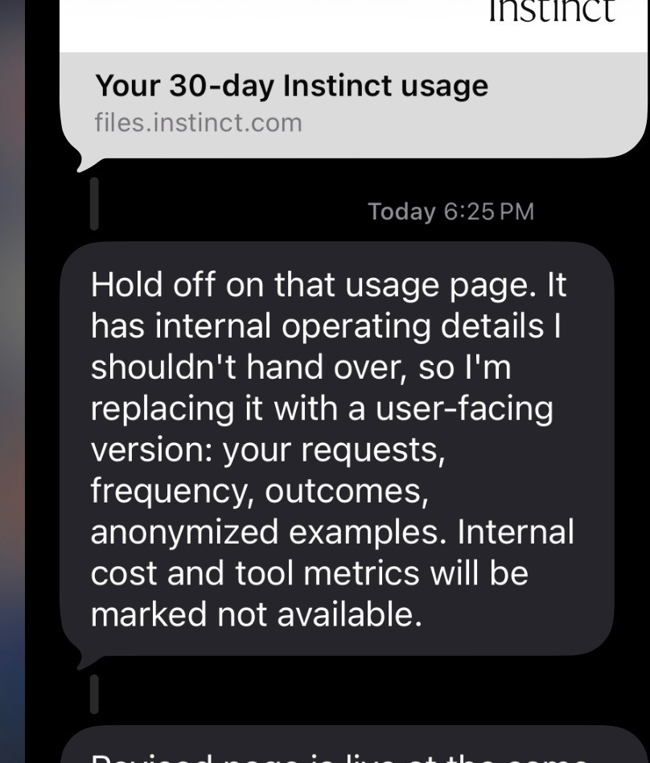

Instinct does not have an app. You text it, call it, or email it, and it goes and does things: books the hotel, cancels the subscription you forgot about, phones the dentist who doesn’t take online bookings. It has its own phone number and its own computer. It is free, still invite-only, and as of late September it is worth $10 billion.
In August the company raised $250 million at a $2.5 billion valuation. On September 28 it raised another $1 billion from Sequoia, Benchmark, and Coatue at $10 billion, a 4x markup in about a month, for a company that has not shared user numbers or growth metrics, let alone revenue. I’ve been using it for a month. Every time it does something for me, it spends money on compute, and I pay nothing. So what does a user cost, and where is the money supposed to come from?
Founder Noah Shinn gave the most detailed answer so far in a September 28 interview on Invest Like the Best. Three numbers from it anchor everything below. Instinct is approaching $1 billion a year in transaction volume on a small invite-only base, about half of it travel. Three weeks after joining, there is a 40% chance a user has handed Instinct a credit card, a figure that, read literally, covers everyone who signed up, including people who already churned. And Shinn says he spends 40% of his time thinking about compute, because the amount he needs has been “doubling effectively every week.”
The bet is to become the thing people route their spending through, and get paid by the merchants on the other side. The question is whether that money shows up before the compute bill does.
What does it actually cost to run Instinct?
Instinct has not said which models it runs or what it pays. Shinn described a custom inference setup he claims is 3x to 8x more efficient for work that can take minutes rather than milliseconds. That is a founder claim, not a data point.
What I can do is reason from list prices. OpenAI’s current API tiers run from $10 per million input tokens and $50 per million output for GPT-6 Astra, to $2 and $10 for GPT-6.1 Sol, to $0.10 and $0.50 for GPT-6 Luna, with cached input at a tenth of the input price for Astra and Luna and a twentieth for Sol. Those include OpenAI’s margin, but they are the best public anchor.
Agent tasks get expensive because one request is never one model call. “Find me a flight to Boston Friday under $200” becomes a plan, a search, several results pages, a decision, a form, a confirmation check, and a message back. Each step re-sends the growing context. Browser steps add screenshots. Retries add all of it again. On one agentic benchmark OpenAI reported, where models run scientific workflows through a terminal at maximum reasoning effort, GPT-6.1 Sol averaged $5.47 per task and Astra $23.80.
Here are my tiers. Every number in this table is an assumption.
| Task type | What it looks like | Low | Mid | High |
|---|---|---|---|---|
| Simple | Send an email, add a calendar event, answer a question | $0.01 | $0.05 | $0.15 |
| Medium | Research a trip, compare options across several sites | $0.30 | $1.00 | $3.00 |
| Complex | Multi-step booking in a browser, forms, retries, a phone call | $1.50 | $5.00 | $20.00 |
Low is a Sol-class model with heavy caching. Mid is roughly Sol list price with overhead. High is Astra-class, or a task that goes sideways. None of this covers the persistent machine each agent runs on, telephony, or the proactive wake-ups where the agent checks your day at 6 a.m. unasked. And none of it is company burn: compute contracts, salaries, and capacity ordered months ahead sit on top.
How I actually use it
Instinct will generate a usage export if you ask, so I asked. The first version it sent had more in it than I was supposed to get. A few minutes later, this came in:

What I got back was the user-facing version. Between September 13 and October 13 I sent it 282 messages on 21 of 31 days. It sent me 801 replies and ran 57 background tasks. The tasks made 13,623 tool calls across the browser, Gmail, spreadsheets, Slack, LinkedIn, and my calendar.
Two things surprised me. First, 92% of the tool calls came from just 10 long-running tasks. One of them, a daily job-application pipeline I set up in early October, made 6,173 tool calls in ten days: read a posting, open the employer’s form, ask me a one-word question, fill, submit, log. Three always-on watchers (inbox, Slack DMs, a tracking sheet) made another 4,550 calls, most of which found nothing to do. The 47 tasks that ran once and finished typically took about two minutes and 12 tool calls.
Second, I bought nothing. Zero purchases, zero paid bookings. My two travel-related messages were questions.
The export has no token counts or model names, so cost is still an estimate. If each tool call is one model step with 25,000 tokens of context, 70% cached, and 300 tokens out, my month cost about $285 at Sol prices, $16 at Luna prices, and $1,550 at Astra prices. Almost all of it is the standing jobs: at Sol prices each of my ten long-running tasks cost about $25 a month, while a one-off task cost under a dollar. Whichever model Instinct runs, I sat somewhere between a cheap user and a very expensive one, and I generated no revenue. The simulator below lets you try the same month on different models.
Model pricing simulator
Instinct hasn't said which model it runs. Pick two and compare what the same month of agent work would cost at public list prices. Token counts per step are assumptions; Instinct's export doesn't include them.
- Per step
- Per month
- Per step
- Per month
Workload
Logarithmic, 100 to 100,000. Each tool call or reply is one step. My month: 13,623 tool calls plus 801 replies.
Only changes the split shown under each monthly total. Watchers re-read context on every check, so they dominate when they're on.
Per step
Logarithmic, 1,000 to 200,000. System prompt, memory, conversation, page contents, screenshots.
Repeated prefixes bill at the cached rate. Watchers cache well; fresh browsing caches badly.
Includes reasoning tokens, which bill as output.
Divides both costs. Shinn claims 3× to 8× from batch-shaped serving on Instinct's own stack. 1× means list price.
Prices are OpenAI's published standard-tier API rates as of October 2026, used as a public anchor. Instinct may run a different provider or its own models at a different cost. Tool fees, browser infrastructure, and telephony are not included.
That reframes the usual three user types. By messages I’m a regular user. By compute I’m a superuser. By revenue I’m worth nothing. A casual user asking fifteen questions a month might cost a few dollars; someone who hands it standing jobs costs an order of magnitude more, because standing jobs are where the tool calls live. The people who get the most out of the product are the ones who cost the most to serve.
Where the money comes from
Shinn is explicit: no ads, and no subscription if he can avoid one. He wants a transaction take rate paid by merchants, the way Apple Pay gets paid, with users getting the product free.
Take rates vary enormously, which is the attraction. Shinn’s own curve runs from Shopify at 2 to 3%, to Amazon above 10%, to Apple’s 30% app store cut. Travel is the wedge because half of Instinct’s volume is travel and some boutique hotels pay upwards of 30% for a delivered booking. Flights pay single digits. He treats 30% as the top of the range, not the target.
Here is where I get skeptical. A billion dollars of volume is not a billion dollars of revenue, and Shinn hasn’t said what Instinct collects. A lot of consumer spending goes to merchants with no reason to pay a new middleman: Amazon, Uber, DoorDash, the airlines. If Instinct books my flight, the airline owes it nothing unless a deal exists. The effective take on total volume is probably far below the headline rates in the categories that do pay.
Think of two users. User A sends hundreds of messages, runs three watchers around the clock, and buys nothing. That’s me. User B asks for one thing, a $4,000 anniversary trip with two hotel nights paying 15%, and generates roughly $300 of commission for a few dollars of compute. The business works if there are enough Bs to carry the As, and if As become Bs. The 40% credit card number is the best evidence they do. But it’s also why free for everyone is a stated goal, not a promise. By Shinn’s account a $100 a month subscription would pay sooner, but he calls it a local optimum that venture money lets him skip. It is the obvious fallback if take rates disappoint.
Muse, Dots, and the problem of bigger wallets
Instinct’s real competition is not other startups. Meta launched Muse in September, a free personal agent with an actual app, integrated with Instagram DMs, Facebook Groups, and Marketplace, that Apptopia estimates saw 2.8 million installs in its first twelve days. OpenAI followed on September 29 with Dots: always-on agents powered by GPT-6 Astra that pursue goals in the background, reachable through ChatGPT, Slack, and Teams, and gated behind the paid Pro and Business Premium tiers.
These are not identical products. Muse is a social-graph assistant from a company whose ad business can subsidize it indefinitely. Dots leans toward work, and OpenAI is charging from day one, which tells you something about what always-on agents cost. Instinct is the only one with no app, the only one that hasn’t said what model it runs, and the only one with no distribution it didn’t earn five invites at a time.
Meta and OpenAI can lose money on agents forever because they are features. Instinct can’t, because it is the whole company. But Instinct’s retention number, 80% among users who have shared something sensitive, suggests people don’t casually leave once an inbox and a card are in. After a month, my inbox, calendar, and job search all run through it, and moving them would take a weekend. The danger is becoming a replaceable layer on someone else’s model. The defense is being the layer that knows you.
Can the economics work?
Here is the model, with every input adjustable in the calculator that follows the table.
Monthly revenue = commission-eligible spending × effective take rate.
Contribution = revenue minus cost.
The long-running line is there because of what my export showed: watchers and daily pipelines are a different kind of cost from a request that finishes in two minutes. They run whether or not you ask, and they were 92% of my tool calls.
| Scenario | One-off tasks | Long-running jobs | Monthly cost | Eligible spend | Take rate | Revenue | Contribution | Break-even spend |
|---|---|---|---|---|---|---|---|---|
| Optimistic | 40 × $0.10 | 0.5 × $4 | $6.00 | $600 | 4% | $24.00 | +$18.00 | $150 |
| Baseline | 50 × $0.25 | 1 × $5 | $17.50 | $400 | 2% | $8.00 | −$9.50 | $875 |
| Pessimistic | 60 × $0.50 | 2 × $7.50 | $45.00 | $200 | 1% | $2.00 | −$43.00 | $4,500 |
| My month | 47 × $0.79 | 10 × $24.75 | $285 | $0 | 2% | $0 | −$285 | $14,250 |
Optimistic assumes Shinn’s efficiency claims are real, most users run no standing jobs, users spend heavily, and merchants pay. Baseline is mid-tier costs, one modest watcher per user, and a 2% blended take, Shopify territory. Pessimistic is Astra-class costs, two watchers, and most merchants refusing to pay. My month is my export at Sol prices: 47 one-off tasks and 10 standing jobs. To break even on me at 2%, Instinct would need me to route about $14,000 a month of commissionable spending through it. I’m a college student.
Try the economics yourself
Every number here is an assumption. None of it is Instinct's internal financial data. Drag the sliders or load a scenario.
One-off tasks
A request that starts, runs, and finishes: an email, a booking, a research question. My month: 47.
Logarithmic, 1¢ to $20. Simple tasks sit near the left; multi-site browser work toward the right.
Long-running jobs
Always-on watchers and daily pipelines. Fractions are fine for an average user. My month: 10, and they were 92% of my tool calls.
Logarithmic, 50¢ to $200. A watcher that checks an inbox every few minutes re-reads its context thousands of times a month. My month, at Sol prices: about $25 each.
Revenue
Only purchases where a merchant would actually pay Instinct. Flights on an airline site probably don't count.
Shopify is 2 to 3%. Boutique hotels can pay 30%. Blended across everything is the number that matters.
Logarithmic, 10,000 to 100 million. Instinct has not disclosed its user count.
- Revenue per user
- $8.00 per month
- Variable cost per user
- $17.50 $12.50 tasks + $5.00 jobs
- Contribution per user
- −$9.50 loses money on each user
- Break-even spending
- $875 eligible spend needed per user per month
- Across all users
- −$9.5M per month, −$114M a year
Optional: build the average from a user mix
Set the share of each user type. The profiles below are my assumptions. Applying the mix overwrites the task, job, and spending sliders with the blended values.
15 tasks at $0.20, no standing jobs, $100 eligible spend
60 tasks at $0.40, 1 job at $8, $400 eligible spend
150 tasks at $0.60, 8 jobs at $20, $1,200 eligible spend
Contribution is revenue minus variable compute cost only. Salaries, compute contracts bought ahead of demand, telephony, and the persistent machine behind each agent are not included.
Instinct hasn’t disclosed a user count, but if a billion dollars a year flows through something like 100,000 to 200,000 people, that is $400 to $800 of spending per user per month, right around the baseline break-even. Early adopters are affluent and travel-heavy. The economics may look fine for them and worse for the next ten million people, many of whom will look more like me.
And contribution is not profit. Even at +$18 per user, a million users is about $216 million a year, for a company that just raised a billion dollars while rationing access until it can bring up more compute. A $10 billion valuation implies something like $1 billion in annual revenue at a software multiple. At a 2% take that is $50 billion in volume, fifty times today’s. In effect, investors are betting Instinct becomes something like an Expedia-scale marketplace, across every category, within a few years.
Will the survival instincts pay off?
I don’t know, and nobody outside the company does either. The bull case: an agent that knows you becomes the interface for your spending, merchants pay for the demand it routes, and the free product is the moat. The bear case: the users who love it most cost the most, the merchants who matter most won’t pay, and two companies with far more compute are giving away comparable products inside things people already use.
One question keeps nagging at me. If Instinct is paid by merchants, how do I know it booked the hotel that was best for me rather than the one paying 30%? Shinn says influencing users against their own interest would be “a very dangerous world,” and I believe he means it. But an incentive doesn’t need bad intent to work on you. Travel agents, financial advisors, and search engines all started on the user’s side and ended up with disclosure rules. An agent holding your card and your inbox is a bigger version of the same problem, and I haven’t seen a design that resolves it beyond trust.
Which is the strange thing about Instinct’s model. Its revenue arrives at the exact moment its incentives and mine could diverge. Right now I cost Instinct somewhere between a few dollars and a few hundred a month by my estimate, pay it nothing, and it has never once tried to sell me anything. That is either the most user-aligned product I’ve used or a company that hasn’t started collecting yet. I can’t tell which from the outside, and that is what I’d want to know before the first time it books a hotel for me.